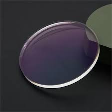

Galeria
Especificaciones
| Producto | Descripcion |
|---|---|
| Lente monofocal | Es un lente sin ninguna division que permite al usuario ver de cerca o de lejos. |
| Lente bifocal | Es un lente dividido en vision lejana y cercana. |
| Lente progresivo | Es un lente sin divisiones visibles que permite al usuario ver de cerca, intermedio y lejos. |
Descripción
Aqui encontraras tres tipos de lentes, puedes escoger el que mas se ajuste a tu necesidad.
Garantia de envios
- Si tu pedido no llega dentro de los tiempos estipulados por la empresa, se hara un descuento del 10% al monto pagado.
- Si tu pedido llega con daños provocados por el transporte del mismo, te reponemos los articulos afectados.
- No se permites devolucion de articulos a menos que haya sido un erros de envio de la empresa.